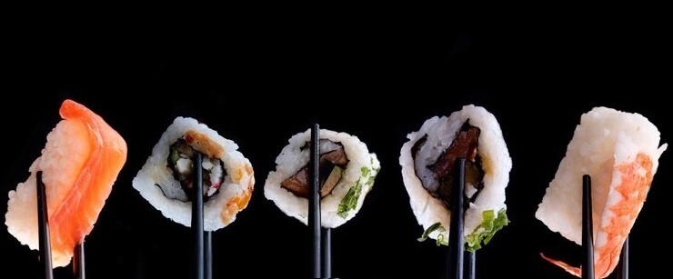
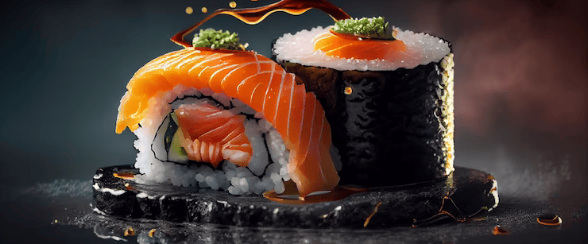
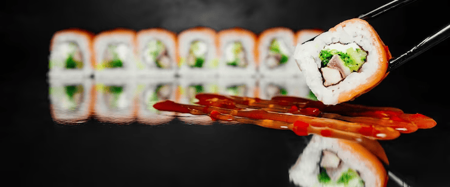

Sumérgete en un remanso culinario en el corazón de Santiago de Chile: Nuestro
exclusivo restaurante de Sushi. Descubre la esencia de la cultura japonesa a través de nuestros
platos exquisitos, cuidadosamente elaborados por el Otaku Sushi Team. Cada bocado es una sinfonía de sabores y texturas, fusionando tradición y creatividad.
Nuestros ingredientes, seleccionados con esmero, garantizan frescura y calidad incomparables. Desde los clásicos nigiris hasta audaces creaciones, hay algo para cada gusto. Nuestro servicio atento y profesional asegura una experiencia memorable. Acompaña tu comida con nuestra selecta carta de bebidas, cuidadosamente elegidas para realzar los sabores.
En nuestro restaurante de sushi, la excelencia culinaria se une con la sofisticación y el encanto, invitándote a vivir una experiencia gastronómica inigualable.
¡Bienvenidos a una travesía de sabores y sensaciones que les enamorará en cada bocado!